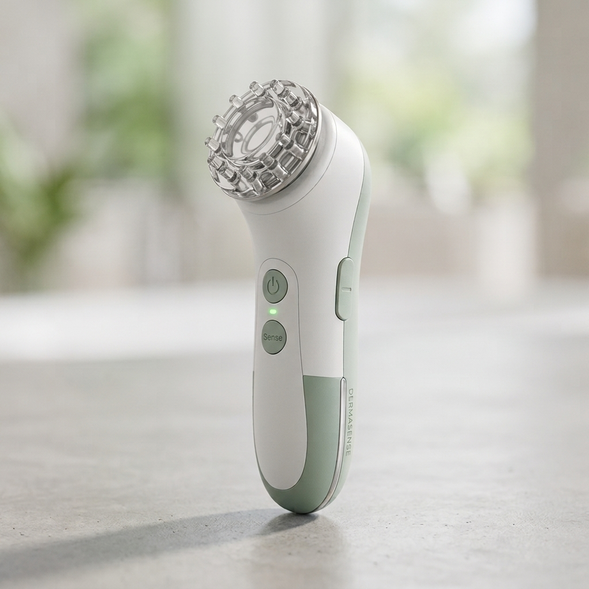

01 / Moisture
Explore a moisture reading.
Use the moisture sensor and contact method described in the instructions for your DermaSense version.
SkinSense
Know your skin. Care better.
Skin analysis, made more accessible

MEASUREMeet DermaSense
DermaSense is a skin-analysis prototype designed to explore moisture, pH, and surface-oil readings in one compact device.
Explore DermaSenseWhat DermaSense measures
The readings are estimates for learning about the prototype, not medical conclusions.
01 / Moisture
Use the moisture sensor and contact method described in the instructions for your DermaSense version.
02 / pH
Follow the validated probe and calibration instructions. A pH reading alone cannot diagnose a skin condition.
03 / Surface oil
Use fresh blotting paper and the light-sensor method described in the device instructions.
Introducing DermaSense
DermaSense brings sensor readings together with a compact display. Its readings should be treated as prototype estimates, not as a diagnosis.
See how to use itHow to use DermaSense
Follow the instructions for your specific device version.
Power on the device and prepare the sensors as instructed.
Use the sensor only with the contact method described in the DermaSense guide.
Follow the validated pH-probe instructions and use fresh blotting paper for the oil estimate.
Treat readings as estimates, then clean and store the device according to its care instructions.
We don't guess your skin.
We measure it.
Transparent by design
Sensor readings depend on proper calibration and use. Follow the device instructions for preparing, calibrating, and cleaning each sensor.
Placement, pressure, temperature, products, and sensor condition can affect results. A single reading cannot determine skin type or diagnose a skin condition.
Consider readings as general information about this prototype, not as medical advice or a replacement for a qualified professional.
Our story
SkinSense was created to make skin-analysis concepts more understandable and approachable.
We aim to explain what DermaSense measures, how readings are collected, and where the prototype has limitations.
Stay in the loop
Join the interest list to hear about prototype updates and future SkinSense news.